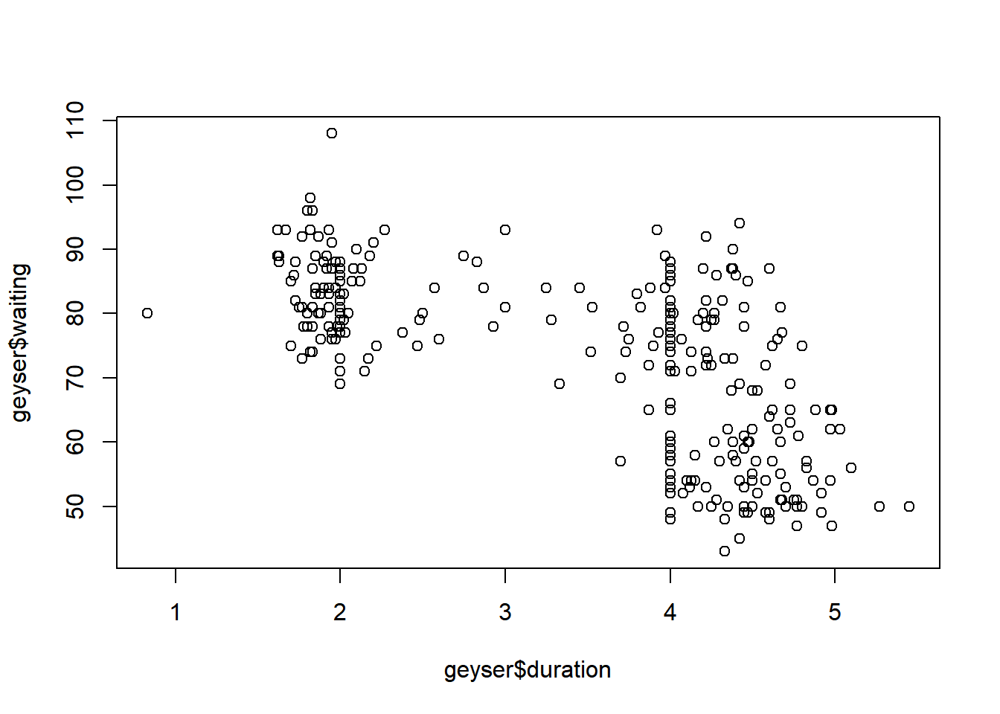
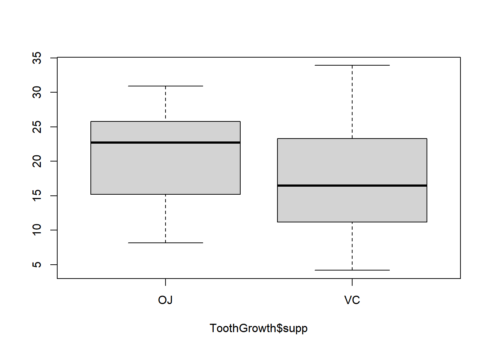

pacman::p_load("aplpack","psych")
geyser <- read.table("https://raw.githubusercontent.com/SangwonJu/data/main/geyser299.txt",sep="",header=T)EDA Assignment 1: Chapter 3
Exploratory Data Analysis (2021 Spring) [in Korean]
3장. 줄기와 잎
1번
교과서 273쪽 [실습 파일]을 참조하여 1장 geyser299.txt 자료를 얻어라. (오류; s자 빠짐) stem-and-leaf display를 그리고 간헐천의 분출 시간의 특성에 대하여 설명하라. 첫번째 Plot은 R의 내장 함수를 사용하였고 두번째 Plot의 경우에는 aplpack Library를 활용하였다.
# Median: 76
stem(geyser$waiting,scale=1,width=80)
The decimal point is 1 digit(s) to the right of the |
4 | 3
4 | 577888889999999
5 | 00000000000011111222223333333444444444
5 | 5556677777777788888999
6 | 0000001112222234
6 | 5555555668889999
7 | 01111122222233333344444444
7 | 5555555556666666677777777778888888888888888899999999999
8 | 00000000000001111111111112222222233333344444444444
8 | 5555555666667777777777777788888889999999
9 | 0011222333333334
9 | 668
10 |
10 | 8stem(log(geyser$waiting),scale=1,width=80)
The decimal point is 1 digit(s) to the left of the |
37 | 6
38 | 1
38 | 55777779999999
39 | 11111111111133333
39 | 555557777777999999999
40 | 11133444444444
40 | 66666888999999
41 | 111333334
41 | 6777777799
42 | 2223333
42 | 566666888888999999
43 | 00000000222222222333333334444444444
43 | 66666666666666666777777777778888888888888999999999999
44 | 11111111222222333333333334444444
44 | 555557777777777777788888889999999
45 | 0011222333333334
45 | 668
46 |
46 | 8summary(geyser$waiting) Min. 1st Qu. Median Mean 3rd Qu. Max.
43.00 59.00 76.00 72.31 83.00 108.00 stem.leaf(geyser$waiting)1 | 2: represents 12
leaf unit: 1
n: 299
1 4* | 3
16 4. | 577888889999999
54 5* | 00000000000011111222223333333444444444
76 5. | 5556677777777788888999
92 6* | 0000001112222234
108 6. | 5555555668889999
134 7* | 01111122222233333344444444
(55) 7. | 5555555556666666677777777778888888888888888899999999999
110 8* | 00000000000001111111111112222222233333344444444444
60 8. | 5555555666667777777777777788888889999999
20 9* | 0011222333333334
4 9. | 668
10* |
1 10. | 8Median이 들어있는 Depth Stem(7s)의 Leaf 개수는 18개
대기시간이 상대적으로 짧은 간헐천과 대기시간이 상대적으로 긴 간헐천 두 종류로 분류할 수 있으며, Median을 기준으로 Centering 되어있기 보다는 대기시간을 기준으로 나누어진 두 집단을 기준으로 Clustering이 잘 이루어져 있는 상황이다. (5*을 중심으로 하는 하나의 Cluster와 7.을 중심으로 하는 또 하나의 Cluster가 존재한다.)
대기시간이 43분에서 60분대 중반까지의 간헐천이 상대적으로 대기시간이 짧은 간헐천으로 분류할 수 있으며, 60분대 중반에서 98분 까지의 간헐천을 대기시간이 상대적으로 긴 간헐천으로 분류할 수 있다.
대기시간이 상대적으로 긴 간헐천이 그렇지 못한 간헐천들에 비해서 더 많이 존재하므로 Symmetric하지 않다고 말할 수 있다.
# Median: 4.00
stem.leaf(geyser$duration,rule.line = "Velleman")1 | 2: represents 1.2
leaf unit: 0.1
n: 299
1 0. | 8
1* |
t |
f |
16 s | 666667777777777
57 1. | 88888888888888888888889999999999999999999
92 2* | 00000000000000000000000000000111111
96 t | 2223
100 f | 4455
102 s | 67
105 2. | 889
107 3* | 00
110 t | 223
113 f | 455
118 s | 77777
128 3. | 8888899999
(67) 4* | 0000000000000000000000000000000000000000000000000000000001111111111
104 t | 22222222222222222233333333333333
72 f | 44444444444444444455555555555
43 s | 66666666666666677777777777
17 4. | 8888889999999
4 5* | 01
2 t | 2
1 f | 4summary(geyser$duration) Min. 1st Qu. Median Mean 3rd Qu. Max.
0.830 2.000 4.000 3.461 4.380 5.450 - Median이 들어있는 Depth Stem(4*)의 Leaf 개수는 67개
- 지속시간이 긴 간헐천과 지속시간이 짧은 간헐천 두 유형으로 간헐천들을 분류할 수 있으며, Median을 기준으로 Centering 되어있기 보다는 지속시간을 기준으로 나누어진 두 집단을 기준으로 Clustering이 잘 이루어져 있는 상황이다. (Stem 1.을 중심으로 하는 하나의 Cluster와 Stem 4*을 중심으로 하는 또 하나의 Cluster)
- 지속시간이 1.6분에서 3분까지의 간헐천이 상대적으로 대기시간이 짧은 간헐천으로 분류할 수 있으며, 3분에서 5.4분 까지의 간헐천을 상대적으로 대기시간이 긴 간헐천으로 분류할 수 있다.
- 지속시간이 상대적으로 긴 간헐천이 그렇지 못한 간헐천들에 비해서 더 많이 존재하므로 Symmetric하지 않다고 말할 수 있다.
- 가장 짧은 간헐천의 지속시간은 0.8분이고, 가장 긴 간헐천의 지속시간은 5.4분이다. Range는 5.4-0.8=4.6분 정도로 퍼져있다.
- 0.8분짜리 지속시간을 가진 간헐천과 1.6분의 대기시간을 가진 간헐천 사이에 Gap이 존재하며 0.8분의 지속시간은 어느정도 Irregularities를 가지고 있음을 확인할 수 있다.
- 대기시간과 지속시간 모두 약 극단으로 갈수록 발견되는 데이터의 수가 감소되는 경향성을 확인할 수 있다.
(가) 간헐천의 분출지속시간과 대기시간에는 유의미한 상관관계가 존재하는가?
plot(geyser$duration,geyser$waiting)
Box Plot을 활용해 두개의 그래프를 그려 보았으나 Lower Fence와 Upper Fence를 벗어난 이상치는 발견되지 않았다.
2번
[R의 datasets에 있는 Nile의 자료] stem-and-leaf display를 그리고 scale=2로 한 것과 비교하여라. 자료의 분포적 특성을 잘 볼 수 있는 것은 어떤 것인가? log를 취하여 그린 것에 대하여도 적당한 scale 값을 찾아라. 원래의 자료와 log취한 자료의 대칭성에 대하여 비교하여라. ?Nile을 통해서 간단히 살펴본 상황에서 해당 데이터는 1871년부터 1970년까지 나일강의 연간 유량흐름을 측정한 Time-Series 자료이다. 단위는 0^8 m^3
stem(Nile)
The decimal point is 2 digit(s) to the right of the |
4 | 6
5 |
6 | 5899
7 | 000123444455667778
8 | 000011222233344555556667779
9 | 0011222244466678899
10 | 0122234455
11 | 00012244566678
12 | 112356
13 | 7stem(Nile,2)
The decimal point is 2 digit(s) to the right of the |
4 | 6
5 |
5 |
6 |
6 | 5899
7 | 0001234444
7 | 55667778
8 | 000011222233344
8 | 555556667779
9 | 00112222444
9 | 66678899
10 | 01222344
10 | 55
11 | 00012244
11 | 566678
12 | 1123
12 | 56
13 |
13 | 7- Scale을 1과 2를 사용했을 때의 Stem and Leaf Plot을 서로 비교할 경우, Scale이 2일때의 Plot의 모양이 더 원래 자료의 분포를 파악하는데 있어 더 적절하다.
- 왜냐하면, Nile Data의 분포는 두개의 봉우리를 가지고 Clustering되어 있는 것이 확인되어 지는데 Scale이 2일 때 그러한 경향성이 더 잘 드러나는 것으로 보인다. (800을 중심으로 한 하나의 Cluster와 1100을 중심으로 한 또 하나의 Cluster로 두 개가 존재한다.)
- Symmetric한 데이터라고는 볼 수 없다. 왜냐하면 두 봉우리의 크기가 서로 대칭적이지 않기 때문이다.
- Cluster가 발생하는 요인에 대해서는 드러나지 않았으나 외적인 요인이 개입되고 있을 수도 있음을 확인할 수 있다.
- 최솟값인 460의 경우와 최대값인 1370의 경우 중간에 Gap이 존재하기 때문에 Irregular한 관측치 일 수도 있음을 확인할 수 있다.
stem(log(Nile))
The decimal point is 1 digit(s) to the left of the |
60 | 2
62 |
64 | 8244555789
66 | 111112344556888900011122333444446666779
68 | 00122223455677889900233345566
70 | 00012244566667001134
72 | 2stem(log(Nile),scale=3)
The decimal point is 1 digit(s) to the left of the |
61 | 2
61 |
62 |
62 |
63 |
63 |
64 |
64 | 8
65 | 244
65 | 555789
66 | 111112344
66 | 5568889
67 | 0001112233344444
67 | 6666779
68 | 001222234
68 | 556778899
69 | 0023334
69 | 5566
70 | 00012244
70 | 566667
71 | 001134
71 |
72 | 2- Log를 취했을 때 Stem and Leaf Plot을 그릴 경우 다음과 같다.
- Scale을 1과 3를 사용했을 때의 Stem and Leaf Plot을 서로 비교할 경우, Scale이 3일때의 Plot의 모양이 더 원래 자료의 분포를 파악하는데 있어 더 적절하다.
- (Nile Data의 분포는 Mode, Median, Mean 순으로 적히는 Right-Skewed Data에 가까운데 Scale이 1일 경우 그러한 분포를 확인하는 것이 쉽지가 않다.)
- 또한 Scale이 1일 경우 로그를 취하지 않았을 때 확인되어지는 두개의 Cluster를 거의 확인하기 힘든데 Scale을 3으로 조정할 경우 두개의 Cluster를 미세하게나마 확인할 수 있다. (첫번째 Cluster는 6.7* Stem을 중심으로 이루어지고 있으며 두번째 Cluster은 7.0* Stem을 중심으로 이루어지고 있다.)
- 따라서 분포적 특징을 더 잘 표현할 수 있는 그래프는 두번째 그래프라고 할 수 있다.
- 첫번째 Cluster가 두번째 Cluster에 비해서 더 많은 관측치를 보인다는 점에서 Symmetric하지 않다.
- 최솟값과 최대값과 Cluster들 사이의 Gap이 더 명백하게 드러나기 때문에 해당 값들은 Irregularities를 가지고 있음을 더 확실하게 확인할 수 있다.
stem.leaf(Nile,rule.line="Velleman")1 | 2: represents 120
leaf unit: 10
n: 100
1 4. | 5
5* |
5. |
2 6* | 4
6 6. | 7999
17 7* | 00112444444
26 7. | 566778999
43 8* | 01112223333444444
(8) 8. | 66667799
49 9* | 0011112344
39 9. | 566678899
30 10* | 1222344
23 10. | 55
21 11* | 00012244
13 11. | 566678
7 12* | 1123
3 12. | 56
13* |
1 13. | 7stem.leaf(log(Nile),rule.line="Velleman")1 | 2: represents 0.12
leaf unit: 0.01
n: 100
LO: 6.12249280951439
2 64. | 7
6 65* | 1344
11 65. | 55778
21 66* | 0011113344
28 66. | 5678889
43 67* | 001112223333344
(8) 67. | 55667799
49 68* | 001222244
40 68. | 56677899
32 69* | 001222344
23 69. | 55
21 70* | 000122334
12 70. | 5556799
5 71* | 0133
71. |
1 72* | 2- 원래의 자료와 log취한 자료의 대칭성을 비교하면 일반적으로는 Log를 취한 자료의 Skewedness가 감소하는 경향성을 가진다는 점에서 로그를 취한 자료의 대칭성이 더 잘 드러난다..
- 로그를 취하지 않은 Stem-Leaf Plot의 경우 두개의 Cluster가 더 확실히 드러나지만, 로그를 취한 데이터에 대한 Plot의 경우 여러 개의 Cluster가 드러나지 않고 Median을 기준으로 Symmetric한 형태로 나타나게 된다. (한 개의 Cluster를 지닌)
- Log Transformation을 한 Plot의 경우 66 Stem이 가장 높은 데이터의 빈도를 가진 것으로 확인되고 있다.
- 따라서, Log Transformation은 해당 데이터의 분포를 불분명하게 표현할 수 있으므로 오른쪽 Plot의 경우에서 처럼 Scale의 조정을 통해서 분포의 대칭성 여부를 더 정확하게 이해할 수 있도록 만들어야 할 것이다.
3번
[R의 datasets에 있는 ToothGrowth의 자료] 아래의 두 명령문을 실행하여 ToothGrowth 자료의 내용을 알아 본다.
?ToothGrowth
ToothGrowth
VC와 OJ 그룹에 대한 stem-and-leaf display를 그려라.
attach(ThoothGrowh)
stem(len[supp==“VC”])
stem(len[supp==“OJ”])
scale을 변화시켜 두 그룹의 stem이 같도록 한 후 서로 비교하여라. 어느 그룹 기나아피그들의 이가 더 많이 자랐나?
- The Effect of Vitamin C on Tooth Growth in Guinea Pigs The response is the length of odontoblasts (cells responsible for tooth growth) in 60 guinea pigs
head(ToothGrowth) len supp dose
1 4.2 VC 0.5
2 11.5 VC 0.5
3 7.3 VC 0.5
4 5.8 VC 0.5
5 6.4 VC 0.5
6 10.0 VC 0.5summary(ToothGrowth) len supp dose
Min. : 4.20 OJ:30 Min. :0.500
1st Qu.:13.07 VC:30 1st Qu.:0.500
Median :19.25 Median :1.000
Mean :18.81 Mean :1.167
3rd Qu.:25.27 3rd Qu.:2.000
Max. :33.90 Max. :2.000 A data frame with 60 observations on 3 variables. [,1] len numeric Tooth length [,2] supp factor Supplement type (Ascorbic Acid or Orange Juice). [,3] dose numeric Dose in milligrams/day
stem(ToothGrowth$len[ToothGrowth$supp=="VC"])
The decimal point is 1 digit(s) to the right of the |
0 | 4
0 | 56677
1 | 01124
1 | 556777799
2 | 2334
2 | 667
3 | 034stem(ToothGrowth$len[ToothGrowth$supp=="OJ"])
The decimal point is at the |
8 | 2477
10 | 0
12 |
14 | 552
16 | 56
18 | 7
20 | 025
22 | 4036
24 | 58258
26 | 44433
28 | 4
30 | 9Scale을 변화시키지 않을 경우 두 자료의 Stem이 달라 Leaf를 비교할 수 없기 때문에 조정을 해주어야 한다. VC의 경우 Stem은 10의 자리수, Leafsms 1의 자리수를 의미하지만, OJ의 경우 Stem이 10의 자리수가 두자리로 표현되기 때문에, Plot의 Stem이 각각 달라 Stem의 수를 맞추는 작업을 하고자 한다.
- VC 자료의 Stem 기준으로 변경
stem(ToothGrowth$len[ToothGrowth$supp=="VC"])
The decimal point is 1 digit(s) to the right of the |
0 | 4
0 | 56677
1 | 01124
1 | 556777799
2 | 2334
2 | 667
3 | 034stem(ToothGrowth$len[ToothGrowth$supp=="VC"],scale=0.5)
The decimal point is 1 digit(s) to the right of the |
0 | 456677
1 | 01124556777799
2 | 2334667
3 | 034stem(ToothGrowth$len[ToothGrowth$supp=="VC"],scale=2)
The decimal point is at the |
4 | 228
6 | 403
8 |
10 | 0225
12 | 6
14 | 525
16 | 5533
18 | 58
20 | 5
22 | 536
24 | 5
26 | 47
28 | 5
30 |
32 | 59VC자료를 기준으로 OJ자료를 변경시킨 결과 Stem의 수는 감소하였고 각 Stem별 Leaf의 수는 증가하였다.
- OJ 자료의 Stem 기준으로 변경
stem(ToothGrowth$len[ToothGrowth$supp=="OJ"],scale=1)
The decimal point is at the |
8 | 2477
10 | 0
12 |
14 | 552
16 | 56
18 | 7
20 | 025
22 | 4036
24 | 58258
26 | 44433
28 | 4
30 | 9stem.leaf.backback(ToothGrowth$len[ToothGrowth$supp=="OJ"],
ToothGrowth$len[ToothGrowth$supp=="VC"],
rule.line = "Sturges",
unit=1)______________________________________
1 | 2: represents 12, leaf unit: 1
ToothGrowth$len[ToothGrowth$supp == "OJ"]
ToothGrowth$len[ToothGrowth$supp == "VC"]
______________________________________
| 0* |4 1
4 9998| 0. |55677 6
7 440| 1* |011134 12
11 9765| 1. |55667788 (8)
(9) 443332110| 2* |1233 10
10 977666555| 2. |5669 6
1 0| 3* |23 2
| 3. |
| 4* |
______________________________________
n: 30 30
______________________________________stem.leaf.backback(ToothGrowth$len[ToothGrowth$supp=="OJ"],
ToothGrowth$len[ToothGrowth$supp=="VC"],
rule.line = "Velleman",
unit=1)______________________________
1 | 2: represents 12, leaf unit: 1
ToothGrowth$len[ToothGrowth$supp == "OJ"]
ToothGrowth$len[ToothGrowth$supp == "VC"]
______________________________
| 0* |
| t |
| f |455 3
| s |677 6
4 9998| 0. |
5 0| 1* |0111 10
| t |3 11
8 544| f |455 14
10 76| s |6677 (4)
11 9| 1. |88 12
14 110| 2* |1 10
(4) 3332| t |233 9
12 55544| f |5 6
7 77666| s |66 5
2 9| 2. |9 3
1 0| 3* |
| t |23 2
| f |
| s |
| 3. |
| 4* |
______________________________
n: 30 30
______________________________VC 자료의 Stem을 기준으로 그린 Plot들을 활용하는 것이 전체적인 분포를 보는데 있어서 더 적합하다고 판단된다. (Stem의 개수를 늘릴 경우 자료의 개수가 많지 않아서 Leaf의 길이가 짧아져 전체 분포를 보는데 부적합해지는 문제가 발생함.) 이 페이지에 그려진 첫번째 Plot을 기준으로 어떤 방식이 더 효과적이었는지 비교해보고자 한다.
OJ그룹의 기니피그들이 VC그룹의 기니피그들에 비해서 더 이빨이 많이 자라났다고 볼 수 있다.
OJ그룹의 데이터들은 크게 두개의 Cluster들을 가지고 있으며 하나의 Cluster는 2* or 2. 줄기에 각각 9개의 데이터가 위치하여 형성되며 또 하나의 Cluster는 0.의 줄기에서 형성된다. 두개의 Cluster가 존재하지만 첫번째 Cluster가 두번째 Cluster에 비해서 더 많은 데이터 빈도에 의해서 만들어지므로 OJ그룹은 첫번째 Cluster에 속할 가능성이 더 높다. VC그룹은 한 개의 Cluster만을 가지고 있으며 Leaf를 가장 많이 가지고 있는 1. Stem을 기준으로 종모양의 대칭적인 분포를 보이고 있는 것으로 보인다. VC그룹의 Median이 1. Stem에 위치하고 있는데 반해, OJ그룹의 Median은 2* stem에 위치하고 있는 것으로 보아 OJ그룹의 기니피그 이빨의 길이가 더 길다고 볼 수 있다.
각 Cluster가 발생한 원인은 OJ와 VC가 기니피그 이빨 성장에 영향을 미쳤기 때문인 것으로 예상되며 OJ와 VC에 대한 면밀한 조사를 통해 각 집단 별 Cluster 생성 원인을 파악해야 한다.
VC 자료는 대칭적 분포라고 볼 수 있지만, OJ의 자료는 대칭적인 분포로 보기 어렵다. 8페이지에 있는 두번째 Plot에서 0. Stem에서의 데이터 빈도를 주변 Stem과 비교할 경우 이러한 경향성은 더욱 잘 드러난다.
자료의 범위는 VC 그룹의 경우 최소값이 4.2 최대값은 33.90이고 OJ 그룹의 경우 최소값이 8.2 최대값이 30.90으로 서로 비슷한 것으로 보인다. VC 그룹의 최대값이 더 크게 관측이 되나 위 페이지의 두번째 Plot으로 볼 경우 3t Stem과 나머지 Stem 사이의 Gap으로 미루어 보아 해당 값은 Irregularity 적인 성격을 가지고 있다고 예상해볼 수 있다.
두 집단의 표준편차를 비교할 경우, 위 페이지의 두번째 Plot에서 확인할 수 있듯이 VC 그룹의 퍼짐의 정도가 OJ 그룹의 퍼짐의 정도에 비해서 크다는 것을 알 수 있다.
sd(ToothGrowth$len[ToothGrowth$supp=="OJ"])[1] 6.605561sd(ToothGrowth$len[ToothGrowth$supp=="VC"])[1] 8.266029- Box Plot을 통해 Lower Fence와 Upper Fence Range내에 데이터들이 정상적으로 분포하는지 확인하였는데 두 그룹 모두에서 Range밖의 이상치는 발견되지 않았다. 또한, Stem-Leaf Plot과 Box Plot을 통해 자료를 이해할 경우, VC 그룹의 최대값이 OJ 그룹의 최대값에 비해서 더 큰 값을 가지더라도, 기니피그의 이빨길이 증가에 Ascorbic Acid가 더 큰 영향을 미쳤다고 보는 것은 불가능하다는 것을 확인할 수 있다.
boxplot(ToothGrowth$len~ToothGrowth$supp,ylab="")